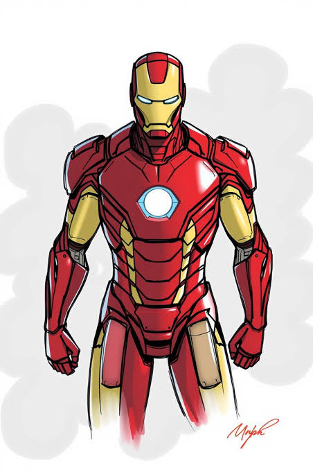

Don't miss ant of the events that you have registered
Iron Man is not just a superhero; he is proof that an ordinary human mind can create extraordinary possibilities. Behind the glowing arc reactor and powerful metal suit is Tony Stark, a man who transforms his mistakes into inventions and his fears into courage. He doesn't wait for the world to change; he builds technology to make that change happen. His greatest strength is not his suit, wealth, or weapons, but his ability to think differently, learn from failure, and never give up. While others see limitations, Tony Stark sees opportunities. He teaches us that true greatness comes not from having superpowers but from using our knowledge, courage, and creativity to make a difference. ❤️⚡
